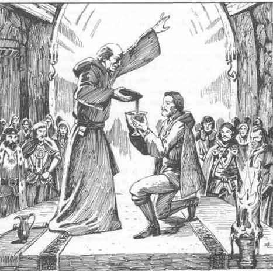

魔法物品 · Magical Items of Greyhawk
灰鹰魔法物品
这些来自弗兰纳斯的魔法物品，都是以其原产地理区域命名的。这反映出这些魔法物品并不是为商人和冒险者（即玩家人物）的一般使用而创造的。虽然其中一些物品是由出售它们牟利的魔法使用者设计的，但大多数物品都是为特定用途创造的。只有靠偶然、外交和／或战斗，这类物品才会从创造者手中转到一个未预期（有时也是不情愿）的所有者手里。只有那些年代相当近、且受到最好保护的魔法物品，仍然受其创造者控制。
玩家人物通常会在魔法物品的原产地找到它，尽管经过长途旅行的物品并不罕见，而且可能带来它们自己的惊喜。这里介绍的魔法物品，没有一种被限制只能在带有其名称的地区使用。不过，物品经常在其他地方无法工作，或用途有限；例子包括地狱熔炉山脉斗篷和失踪船只的梅代吉纳手镯。
每件物品后列出的信息包括保留该物品的角色可获得的经验值，以及出售物品的金币价值。职业限制以缩写列出：C（牧师）、F（战士）、M（魔法使用者）和 T（盗贼）。任何子职业都可以使用限制给其主要职业的物品。
其他魔法物品 Miscellaneous Magic Items
洛特米尔山脉的铁砧
Anvil of the Lortmil Mountains
这件铁匠工具是在莫拉丁的圣所中被施加魔法的。它允许矮人武器匠打造出极其坚固且锋利的刀刃。每件武器所需的时间是通常的两倍；如果熟练检定失败，成品就是一件普通武器；如果检定成功，成品就是一件精良武器。精良武器的价值是同类普通武器价格的 100 倍。据说这件铁砧曾被用来锻造传奇的矮人魔法武器。
经验值：3,000；金币价值：30,000。
苏尔豪特山脉的熊斗篷
Bear Cloak of the Sulhaut Mountains (C, F)
部落萨满用洞穴熊的皮毛施加魔法。这件毛皮斗篷带有熊头兜帽、熊皮和熊爪。它允许穿戴者每天施展两次动物交谈，并每天施展一次定身动物。穿戴者的力量变为 18（50），并获得 50% 的恐惧免疫力。每周一次，穿戴者可以变成一头洞穴熊，持续 1d4+2 小时。它的所在位置不明。
经验值：1,500；金币价值：17,500。
阿迪大王国的黑冠
Black Crown of Aerdy
这件邪恶的头饰由古代大王国纳莱克斯家族最初的霸王们佩戴。它的附魔究竟是某种尚未确认的力量，还是一个残酷灵魂的容器，仍然没有定论；但它的力量能够重建已经覆灭的帝国。戴上它之后，穿戴者无法自愿将它取下。
穿戴者的智力提高 2 点，感知提高 3 点（均不能超过其种族上限），并获得一级魔法使用者或牧师的能力。原本不是魔法使用者或牧师的穿戴者必须选择其中一种能力。戴上黑冠时以及此后的每个月，穿戴者必须进行一次对法术的豁免检定；失败则变为守序邪恶阵营。随后还必须进行另一次对法术的豁免检定；失败则患上自大狂。两种结果都出现之后，穿戴者每月必须进行一次对法术的豁免检定；失败则失去 1 点体质。体质被完全吸干之后，穿戴者会变成一只守护黑冠的幽魂。
黑冠只能通过祈愿术或同等力量取下。取下之后，智力、感知和职业能力的增益都会消失；阵营只能通过移除诅咒和赎罪术一起逆转；人格问题只能通过治愈术解决。
经验值：—；金币价值：2,000。
施奈的黑帆
Black Sails of Schnai
这些附魔帆由雪地蛮族制作，并由他们的萨满祝福。它们是方帆，只用于伟大英雄或领主的葬船。死者的尸体会与船一起焚烧，帆则几乎全部被烧毁，只留下小小一块。部落首领可以在战斗中焚烧剩余的帆片，召唤其中的灵魂。
灵魂会以幽灵般的英灵战士（einheriar，灵魂战士）形态出现，为部落战斗，直到被摧毁。它们通常拥有 4–12 个生命骰；使用武器进行攻击时，命中骰获得 +1 加值；它们穿戴着生前的装备，并且可以像特殊不死生物一样被驱散。据报告，有些村落最多可以召集 10 名这样的战士。
经验值：1,000；金币价值：5,000。
弗瑞东尼的棺材
Casket of Furyondy
这是一口雕刻精美的木棺，由弗瑞东尼的牧师施加魔法，用来保存荣誉之死者。任何守序善良的牧师都可以通过一项仪式启动它：将一名死亡不超过 9 天的人类或类人生物的尸体放入棺材，然后进行祝福。尸体会被无限期保存。无论经过多久，都可以对尸体施展复活术；进行系统震击检定时，死者的体质视为比当前能力高 3 点，且没有最大值限制。复活之后，死者还会获得治疗术所带来的益处。
经验值：2,500；金币价值：27,500。
###盾之地的圣杯
Chalice of the Shield Lands

这个金色圣杯是为了对抗角之社而附魔的。它允许一名守序善良的战士暂时成为一名与自身等级相同的圣武士，以完成一次单独的任务，并获得圣武士的全部能力。
圣杯只能由守序善良的牧师通过一项包括任务术在内的仪式激活。战士必须发誓效忠于一个守序善良的事业，然后饮下圣水；在任务持续期间，他会以圣武士身份行动，阵营也会变为守序善良。如果他偏离誓言，裁判可以让他失去部分或全部能力。如果任务失败，圣杯就会碎裂。
经验值：3,000；金币价值：25,000。
阿梅迪奥的猎豹斗篷
Cheetah Cloak of Amedio
这件斗篷由黄色、带有黑色斑点的猎豹皮制成。它使敏捷提高 3 点（不能超过种族上限）。每 3 个轮次一次，穿戴者可以以移动力 45 英尺的速度冲刺 3 轮。在没有月亮的夜晚，穿戴者可以在每 24 小时内变成猎豹，持续最多 6 小时。
经验值：1,500；金币价值：15,000。
炽热山脉的斗篷
Cloak of the Hellfurnaces
这是一件红色衣物，可以使自然热量造成的伤害减半。它可以防护火花和火山爆发时喷出的灼热火山灰，但不能防护岩石碎块，即所谓的“炸弹”或“石块”。斗篷上的兜帽条可以包住嘴和鼻子，防止尘土和火山灰进入，并使穿戴者对吸入型毒素的豁免检定获得 +3 加值。穿戴者对魔法火焰和火龙吐息的所有豁免检定获得 +2 加值；即使豁免失败，伤害也会每骰减少 1 点，但每骰最低仍为 1 点。
经验值：2,000；金币价值：8,000。
阿尔莫尔的硬币
Coin of Almor
这是一枚受到诅咒的硬币，原本是为了帮助贫困者而制作的。一个打算把它留下或与他人分享的角色必须进行对法术的豁免检定；失败时，他会产生强烈的慈善冲动。无论角色原本是什么阵营，他都会把自己的财富交给贫穷和有需要的人。他永远不能保留超过 50 金币；多出的财富会一直留在他手中，直到某个合适的非玩家角色，例如乞丐或农民，接受他的赠送。这样的慷慨不包括魔法物品。只有移除诅咒才能解除它的效果。
经验值：—；金币价值：500。
图斯米特的项圈
Collar of Tusmit
这是一件精金颈部护具。一名巫师曾因为害怕被斩首而制作了它。它不提供护甲等级加值，但能免疫斩首，尤其能免疫锋锐剑造成的斩首效果。即使攻击造成了足以杀死角色的全部生命值伤害，头颅仍会留在身体上。
经验值：1,000；金币价值：5,000。
###科鲁斯克的宝石
Coruskian Stone
这块绿色宝石镶在一条金项链上。一名尼洛德施法者曾试图用它控制狮鹫，但由于无法骑乘空中的狮鹫，最终死在一条裂隙中。每天一次，它可以魅惑狮鹫，狮鹫可以进行正常的相关豁免检定。被魅惑的狮鹫允许施法者和他的盟友骑乘。
不需要熟练检定的空中机动可以使用陆地上的相同技巧；如果某种机动需要检定，而骑手没有空中骑乘熟练项，则该检定自动失败。骑着狮鹫进入战斗会使法术失效的概率加倍；在每场战斗开始前进行检查。
经验值：1,500；金币价值：8,000。
灰鹰的圣徽
Holy Symbol of Greyhawk
这个圣徽挂在金链上。每天一次，它可以同时施展祝福术和防护邪恶。
经验值：300；金币价值：3,000。
黑沼的王冠
Crown of Blackmoor
这是一顶黑铁王冠，镶有一颗巨大的火蛋白石。一名强大的巫妖制作了它，用来传播邪恶与毁灭；只有邪恶或愚蠢的人才会去寻求它的力量。
如果把王冠戴到一具至少拥有 18 级魔法使用者身份的邪恶角色尸体上，尸体就会作为巫妖复苏。尸体必须通过系统震击检定；如果巫师死亡后每过 5 年，检定修正就额外降低 1%，否则尸体会解体成尘埃，并且永远无法复活。巫妖的智力起初为 0，此后每天增加 1 点，直到达到超凡智力；达到之后，它获得巫妖的全部能力。
召唤者无法控制巫妖。巫妖的反应检定累计使用下表中的修正：
| 召唤者或提供的条件 | 修正 |
|---|---|
| 善良阵营 | −30% |
| 邪恶阵营 | +10% |
| 圣武士、战士或盗贼 | −20% |
| 牧师 | +10% |
| 魔法使用者 | +20% |
| 0 级 | −50% |
| 1–5 级 | −30% |
| 6–11 级 | −20% |
| 12–18 级 | −10% |
| 超过 21 级 | +10% |
| 每提供价值 500 金币的财宝 | +1% |
如果被带回的玩家角色成为巫妖，他就会由裁判作为非玩家角色控制。他可能会与召唤者保持友好，但最终会离开并走上自己的道路。
经验值：—；金币价值：80,000。
苍海之盘
Disk of the Azure Sea
这件物品深受海上商人的欢迎，后来被卖给了一名富有的基奥兰商人。它是一块手掌宽的木盘，中央有一个小金环。把它放在船首，并向法兰汉祈祷后，它可以保护船只 24 小时。
如果船只遭到海盗、劫掠者或从水下发动攻击的袭击者攻击，有 75% 的概率会出现薄雾，使船只得以逃脱而不受伤害；否则，攻击按正常方式进行。
经验值：1,000；金币价值：10,000。
维路纳的梦帽
Dream Cap of Veluna
这顶皮帽会影响未来睡觉的穿戴者。每一整夜之后，穿戴者都会梦见下一个将要面对的生物或力量所带来的威胁。非玩家角色、怪物、法术或自然危害会以象征形式出现；例如，牛头怪可能表现为公牛或毛发浓密的人，火球术可能表现为火焰覆盖的土地或火元素位面。
做梦者必须进行一次对麻痹的豁免检定，以便有勇气面对危险。成功时，他在面对实际危险时，所有豁免检定、能力检定和命中骰获得 +2 加值；失败时，这些检定和骰值都受到 −2 减值。穿戴者始终记得梦境，但裁判不必主动提起它，除非玩家询问。危险发生之后，玩家可以进行智力检定，以判断梦境与事件之间的联系。
经验值：1,500；金币价值：7,500。
特恩的眼罩
Eyepatch of Tenh
这是一块黑色眼罩。通过未受伤的那只眼睛，穿戴者可以在正常视距内看见所有隐形、星界和以太状态的事物；幻术和变形也会显露真实形态。穿戴者在识破幻象杀手时受到 −5 减值。
一次最多只能使用 1 个轮次，每天最多使用 3 次；否则可能造成永久性的眼部损伤、剧烈头痛和其他后果。
经验值：2,000；金币价值：15,000。
特恩的火焰镜
Flaming Mirror of Tenh (M)
这面银色椭圆镜高 6 英尺、宽 3 英尺，装在橡木支架上。一名位面巫师通过它获得了通往火元素位面的通道。说出命令后，镜子会打开通往火元素位面的闸门，使用者可以观察、进入或离开那个位面。
每当闸门保持开启一个轮次，就有 10% 的概率会有一个火元素穿过它跳入主物质位面，并试图杀死或烧毁眼前的一切。镜子最多有 30 次充能，每轮可以消耗 1 次。充能耗尽后，镜子会碎裂。
经验值：2,000；金币价值：8,000。
森迪的宝石切割工具
Gemcutter’s Tools of Sunndi
这些虎钳、锤子、刀片和凿子由住在森迪郡宝石矿山中的山地矮人施加魔法。它们用于宝石切割熟练项时，可以让使用者在《地下城主指南》的宝石基础价值表上获得修正。裁判掷 1d8：
| 1d8 结果 | 宝石基础价值表修正 |
|---|---|
| 1–5 | −1 |
| 6–7 | −2 |
| 8 | −3 |
这些工具也适合在矿井中对宝石进行最后加工；根据《地下城生存指南》的表 34“宝石品质”，它们可以使最终平均价值增加 20%–50%。工具的主人可以要求最高为通常费用 4 倍的报酬。
经验值：3,000；金币价值：25,000。
大王国的高脚杯
Goblet of the Great Kingdom
这是大王国的暴君们使用的物品。它看起来是一只经过抛光的普通橡木杯，但任何放在其中至少 1 轮的毒液或毒药液体都会被自动中和。
经验值：1,200；金币价值：8,000。
乌恩斯特的金腰带
Golden Girdle of Urnst
这是一条红色丝绸腰带，其中混有金色薄片，用来保护魔法使用者免受战士攻击。它可以使穿戴者对所有剑类获得 −3 的护甲等级，即护甲等级提高 3 点；其他武器不受影响。
经验值：500；金币价值：3,000。
灰鹰的金头环
Golden Circlet of Greyhawk (M, T)
这是一枚供领主市长使用的金色头环，据说被保存在某处金库中。它可以像瓦尔哈拉号角一样召唤盗贼：
| 使用者等级 | 召唤的盗贼 |
|---|---|
| 4 级或更低 | 1d4 名 4 级盗贼 |
| 5–8 级 | 1d4 名 8 级盗贼 |
| 9–12 级 | 1d4 名 12 级盗贼 |
| 13 级或更高 | 1 名 18 级盗贼，能力值最高 |
使用者可以选择召唤少于最大数量的盗贼。他们会保持友好，但拒绝执行鲁莽的任务。盗贼会留在现场 8 小时，或者直到被杀死为止。12 级及以下的盗贼拥有平均能力值，穿皮甲，使用短剑和普通盗贼装备。
18 级盗贼的护甲等级为 2，但仍然只穿皮甲；他使用一把 +3 短剑。在逗留期间，他有 30% 的概率会从任何一处宝藏中偷走自己能够使用的最佳魔法物品；一旦这样做，他就会消失。
经验值：2,000；金币价值：30,000。
其他魔法物品 Miscellaneous Magic Items
尼尔·迪夫的疾行驳船
Hasty Barge of Nyr Dyv
这艘魔法船由一名被尼尔·迪夫人民收养的巫师创造。魔法使用者把它作为礼物送给了一名伦尼贵族；而湖上人民出于感激，又把这名巫师册封为贵族。
这艘驳船看起来像伦尼人的普通船只。它宽 14 英尺、长 35 英尺。通过命令，它可以以两倍于正常的速度行驶，或者每天航行 60 英里；持续时间不限，并且完全依靠自身的魔法力量前进。船的两侧各装有四架重弩，还可以继续增加。驳船带有一面可在有风天气升起的斜桁帆，用来掩饰它的移动是由魔法驱动的。
疾行驳船会以魔法排斥智力低于一般水平的水生生物。这些生物不会攻击驳船，也不能对这种效果进行豁免检定。
经验值：2,500；金币价值：30,000。
科鲁斯克山脉的头带
Headband of the Corusk Mountains
这条头带由一条远古白龙的头骨雕刻而成。一名强大的巫师为它施加魔法，企图把山地矮人赶出他们的家园和富饶矿井。尽管这名魔法使用者最后死在矮人军队投掷的斧雨中，这件物品却始终没有被找回，因此它仍然遗失在科鲁斯克山脉中，也可能已经落入某个人手里。
头带允许穿戴者像使用白龙控制药水一样影响白龙；此外，穿戴者对骑乘白龙的空中骑乘熟练检定获得 −2 骰值修正。穿戴者完全抵抗白龙吐息以及所有寒冷攻击的效果（包括法术、天气或任何其他寒冷类型）。
经验值：1,800；金币价值：18,000。
维路纳的治疗帽
Healing Cap of Veluna (C)
这顶小布帽经过附魔，是为了帮助维路纳的牧师治疗垂死者和伤者。牧师戴上它之后，任何一种治疗伤口法术所恢复的生命值都会加倍。
经验值：4,000；金币价值：22,500。
约滕斯的头带
Headband of the Jotens (C, M)
这条麋鹿皮带经过附魔，用来确保旅行者在约滕斯的安全。把它戴在角色头上时，物品允许穿戴者理解丘陵巨人的心理。如果穿戴者能够与丘陵巨人交流，他可以获得自己选择的任何反应修正，最低可达 −60%，最高可达 +25%。每天一次，角色可以在一群丘陵巨人中激发下列情绪之一：
| 情绪 | 效果 |
|---|---|
| 勇气 | −20% 士气加值（见《地下城主指南》） |
| 恐惧 | +20% 士气减值 |
| 愤怒 | −40% 反应修正；针对愤怒对象时生命骰 +2，伤害 +2 |
这些情绪可以在任何一群不超过 12 名的丘陵巨人中激发，包括友好的丘陵巨人。情绪持续 2d8 个轮次，并且必须影响穿戴者视线范围内的单独一群丘陵巨人。
经验值：800；金币价值：4,500。
光明沙漠的圣星
Holy Star of the Bright Desert
这是一枚铜星，上面刻有海若尼斯“不可战胜者”的银斧和能量闪电。它由苦行武士制作，用来帮助他们对异教徒进行神圣战争。善良的穿戴者获得 30% 的恐惧免疫力，并在光明沙漠与苦行武士进行交涉时获得 +20% 反应加值。邪恶阵营的穿戴者对涉及恐惧的所有豁免检定（无论恐惧来自魔法还是其他来源）受到 −4 减值，并承受 +20% 的士气减值。
在距离任何极端邪恶的生物 30 英尺以内时，这件装置会发出明亮的光（参见侦测邪恶法术）。
经验值：1,000；金币价值：6,000。
阿尔莫尔的神圣奖章
Holy Medallion of Almor (C)
这枚金色奖章是在阿尔莫尔仍受大王国统治时制作的。阿尔莫尔的牧师预见到法兰尼斯将有大邪恶降临，因此为它施加魔法，以帮助维持和平。
每天一次，奖章的力量可以作用于 30 码范围内的一名人类、类人生物或类人生物族群成员。受影响的生物必须进行对法术的豁免检定，否则会因暴力而极度恶心。仅仅看见暴力，就会使受影响的生物必须进行对毒药的豁免检定；失败时，它会变得无助，2–5 轮内无法采取行动。如果该生物试图对另一名活着的生物造成身体伤害，必须以 −5 修正进行对毒药的豁免检定；失败时承受同样效果。此外，该生物的命中和伤害受到 −3 减值；受影响的玩家角色或非玩家角色只要继续进行暴力行动，其力量、感知和敏捷就都减半。某些法术（例如力量术）可以帮助受害者，但只有移除诅咒才能完全解除一个生物的状态。奖章的效果持续 24 小时。
经验值：1,200；金币价值：9,000。
苍海号角
Horn of the Azure Sea
这只魔法号角由一名邪恶的大祭司制作，他想要获得一支不死生物军队，并与之结交、控制它们。提起这件物品的名字，就会让所有水手和远洋商人极度不安；他们拒绝与一个被怀疑拥有这只号角的角色一起航行。
每周一次，而且只能在夜间的公海上使用，号角可以召唤一艘鬼船。鬼船在 2–5 轮内出现，从以太位面实体化进入边界以太位面，并可以从主物质位面看见它。船通常很大，有多层甲板、两三根桅杆和破烂的帆。它呈白色且半透明，不发出任何声音。它会在召唤者所站的船只旁漂浮 10 个轮次，然后消失，返回深层以太位面。
任何看见鬼船的角色都必须进行对法术的豁免检定；失败则因恐惧而持续 1 轮。召唤者本人免疫这种效果。鬼船看似无人驾驶，但实际上被下列类型的不死生物所盘踞：
| 1d10 结果 | 不死生物 |
|---|---|
| 1–2 | 1–4 个幻影亡灵 |
| 3–4 | 1 个鬼魂 |
| 5–7 | 3–12 个阴影 |
| 8–10 | 1–4 个幽灵 |
这些不死生物通常不会主动显露自己，但其中一个转移到召唤者船上的概率为 75%。从那以后，它会不情愿地服从召唤者的命令，直到召唤者死亡，或者直到它被摧毁。
经验值：750；金币价值：5,000。
屏障峰的号角
Horn of the Barrier Peaks
这件铁制乐器由矮人铁匠施加魔法，用来巩固类人生物与巨鹰之间的友谊。出于对伟大鸟类的尊重，它并不经常使用，但在绝望时刻偶尔派上用场。
号角每周只能使用一次。在巨鹰栖息的区域，它可以召唤 7–12 只巨鹰；巨鹰会在 4–7 轮内到达。如果矮人、精灵或半身人处于危险之中，巨鹰会攻击任何威胁它们的事物，和／或把这些类人生物及其同伴带到安全处。巨鹰不会战斗至死，也不会毫无意义地冒险，但如果还需要从危险中救出更多人类或类人生物，它们会呼叫援军。
为了确保巨鹰继续响应号角的召唤，所有获救者都必须接受一个任务术，为巨鹰完成某项服务。如果所有获救者都没有这样做，古老的契约就会破裂，号角也会碎裂。
经验值：3,000；金币价值：18,000。
广阔沼泽的号角
Horn of the Vast Swamp (C, M)
这只海螺由一名叛逃的魔法使用者施加魔法；他因犯罪行为被森迪伯爵放逐。巫师企图获得对新家园居民的控制权，尽管他为此付出了沉重代价（见下文说明）。
号角可以召唤 7–12 只巨蛙。任何召唤者都可以控制这些巨蛙，持续轮数等于自己等级的两倍。非邪恶阵营的召唤者必须进行对法术的豁免检定；失败则失去对巨蛙的控制，并遭到它们攻击。每次使用号角，召唤者都必须进行对法术的豁免检定；失败则永久失去 3 点感知。召唤者不会注意到变化，直到感知降至 0；此时他会变成一只巨蛙。累积变化如下：
| 总共失去的感知点数 | 效果 |
|---|---|
| 3 | 玻璃般的眼睛、疣 |
| 6 | 浅绿色头发 |
| 9 | 青蛙般的面部特征、呱呱叫的声音 |
| 12 | 深绿色皮肤 |
| 15 | 肿胀的身体、驼背 |
经验值：1,000；金币价值：2,500。
盗贼王国的铁冠
Iron Crown of the Bandit Kingdoms
这件金属头饰在战士之地打造而成，可以彻底消除下列类法术能力作用于穿戴者的机会：恐惧术、魅惑人类术、魔法容器术、暗示术和定身人类术。战士戴上它时提升一个等级，而牧师或魔法使用者戴上它时降低一个等级。
经验值：3,000；金币价值：35,000。
冰海的铁钉
Iron Pin of the Icy Sea
这枚铁钉装在圆形透明水晶容器中。它最初由在雾气弥漫的夏季航行于冰海的野蛮猎人／劫掠者使用。一个命令可以让铁钉始终指向正东；第二个命令可以使它指向指定的目的地。此外，如果有外来的魔法或超自然力量正在影响航行，水晶就会发光。
然而，它和磁石一样会受到强大磁力的影响，并且无法防护自然航行危险，例如北方雾气中若隐若现的巨大冰山。
经验值：500；金币价值：4,500。
灰鹰的提灯
Lantern of Greyhawk
这盏带罩提灯是掠夺者在疯狂大法师扎吉格·伊拉格恩废弃的城堡中找到的。它究竟为什么被使用仍是个谜，不过许多人猜测，它曾被用来防护那位大法师打交道的超自然生物。
每天一次，提灯可以发出魔法光，持续 1 轮。这种光会使半径 50 英尺内所有隐形、脱离相位和以太状态的生物显形。以太生物随后会显现为透明的幽灵状实体。这种光还会自动像一名 15 级牧师一样驱散任何不死生物。
经验值：800；金币价值：7,000。
大王国的挂坠
Locket of the Great Kingdom (M)
这件物品由一名极度害怕死亡的巫师制作。后来又有两三名施法者使用过它，但通常都要以另一个活着的生物为代价。承受压力时，这枚挂坠进行豁免检定时视为硬金属。
说出命令词后，挂坠会吸入魔法使用者的心灵（灵魂），并将其安全保存。如果角色之后死亡，他的生命力会前往挂坠（参见魔法容器术）。如果持有者与挂坠处于不同位面，他的生命力有 7 天时间回到挂坠；否则心灵就会离开，前往与角色阵营相应的外层位面。
生命力进入挂坠之后，可以感知半径 50 英尺内发生的事件，但无法与不具备心灵感应或适当法术能力的生物交流。如果挂坠在只容纳心灵而不容纳生命力时被摧毁，心灵会彻底且不可逆转地湮灭；但如果挂坠在容纳生命力时被摧毁，心灵会前往与角色阵营相应的外层位面，从而允许复活。
挂坠给予生命力三种类法术能力，每种能力每天可以使用一次：死者复生（只能作用于单个骷髅或尸体）、魔法容器术（如魔法使用者的法术）以及弱智术，使用者等级按角色自己的等级计算。注意，被动画的身体（僵尸）或骷髅拥有该怪物的全部特征，但保留使用者的智力。此外，被动画超过 60 天的僵尸必须在此后的每一天进行一次对死亡的豁免检定；失败则变成骷髅。
经验值：3,500；金币价值：25,000。
马洛格的奖章
Medallion of Malog (M)
这枚奖章挂在金项链上，由角之社首都的邪恶神殿制作。它允许一名智力至少为 12、感知至少为 10 的魔法使用者每周施展一次五级怪物召唤术。
经验值：1,500；金币价值：7,500。
梅德吉亚的失船手镯
Medegian Bracelet of Lost Ships
这枚银盘中嵌有一颗锆石。它由一名贪婪的巫师施加魔法；巫师曾用它获得巨额财富，后来被海盗抓住并绞死。
当距离 1 英里以内存在沉船时，手镯中的宝石朝向最近沉船的一面会发出红光。当宝石进入沉船水平方向（不是垂直方向）50 英尺以内时，会发出蓝光。说出命令词后，手镯会使沉船浮出水面，持续 2 个轮次。
手镯最多有 25 次充能，不能重新充能。探测能力不消耗充能；但打捞沉船所需的充能数取决于船只大小：
| 沉船类型 | 消耗充能 |
|---|---|
| 小船或驳船 | 1 |
| 小型桨帆船 | 3 |
| 大型桨帆船 | 4 |
| 小型商船 | 4 |
| 战船 | 5 |
| 大型商船 | 6 |
每发现一艘沉船，就有 25% 的概率在同一片区域还有 1–6 艘其他失踪船只。一次只能打捞一艘船。每艘船有 75% 的概率被一只随机怪物占据。失踪船只通常只剩下被海藻覆盖的腐烂木头。
每名登上打捞船只的角色，每轮都有 20% 的概率因踩穿不稳定的甲板而受到 1d6 点伤害（可以进行可选的敏捷检定来避免伤害）。注意，已经碎裂成数块的船可能需要消耗多次充能；严重破碎的船可能无法通过这种方式打捞。
经验值：1,500；金币价值：15,000。
阿尔莫尔的项链
Necklace of Almor
这件物品看起来像一块生锈、毫无价值的首饰。它由一名刻薄的巫师施加魔法；巫师一生都戴着它。讽刺的是，他平静地死去，并没有激活它的复仇力量。此后其他穿戴者使用过它。
这件物品受到诅咒；戴上之后无法取下，除非借助移除诅咒术。只有当一个有智力的生物造成穿戴者的暴力死亡时，它的魔法才会生效。死亡九天后，穿戴者会作为一具行尸站起，唯一目标就是毁灭杀死自己的责任者。它会忽略其他所有人，除非有人干涉它；但即便如此，也只会在干涉持续期间理会对方。
这件物品的力量会使尸体复苏，让它像巨魔一样再生伤害（每轮 3 点生命值）；如果原来的身体被摧毁，它还可以让附近一具新鲜尸体活动起来。复苏的尸体免疫牧师驱散、圣水和其他牧师物品；摧毁它的唯一可靠方法是把身体烧成灰烬。
在战斗中，复苏的尸体拥有 8 个生命骰，并通过勒绞攻击造成 2d8 点伤害；一旦初次攻击成功，伤害会持续。它会一心一意地攻击应对自己死亡负责的生物。
尽管所有伤害最终都会再生（或者转移到另一具身体上），尸体仍会显示不可逆转的腐败过程。穿戴者会用 15 天时间尝试复仇；过了这段时间，角色的心灵将无法继续留存，并永远离开主物质位面。一旦发生这种情况，既不能转生，也不能复活。
有 50% 的概率，穿戴者会把复仇目标转移到杀死自己的生物以外的其他人身上，但必须满足以下条件：
1. 这些其他人在穿戴者被杀时与最初目标在一起； 2. 这些其他人帮助了最初目标，并且在最初目标被杀时在场； 3. 这些其他人杀死了最初目标，从而挫败穿戴者的复仇欲望。
否则，穿戴者会在复仇完成或时间耗尽时离开。
经验值：—；金币价值：2,000。
灰鹰的预言球
Oracles of Greyhawk (M)
这些物品看起来像带有轻微色调的水晶球。它们许多年前由当时的领主市长制作。不过，没有人确定政府目前仍拥有多少枚，也不知道有多少枚已经遗失或被盗。
每天可以向预言球提问一个问题，就像魔法使用者请教贤者一样（见《地下城主指南》）。已知的预言球共有七枚：
| 颜色 | 知识领域 |
|---|---|
| 红色 | 角之社 |
| 橙色 | 荒野海岸 |
| 黄色 | 弗瑞东尼王国 |
| 绿色 | 格纳利森林 |
| 蓝色 | 盾之地 |
| 紫色 | 灰鹰城 |
| 棕色 | 凯恩山丘 |
可能的问题包括人类和类人生物的人口、军队的数量和类型、怪物的类型，以及《地下城主指南》中列在“人类”“类人生物”“动物群”和“植物群”下的特殊知识类别。
除非问题涉及不同的地理区域，或涉及上表没有列出的研究领域，否则每个问题都可以视为属于预言球的主要领域。由于物品制造者的阵营，知道答案的概率还会受到提问者阵营的影响：
| 提问者阵营 | 修正 |
|---|---|
| 守序 | +10% |
| 混乱 | −10% |
| 善良 | +10% |
| 邪恶 | −15% |
| 中立 | +25% |
这些修正可以累加。
经验值：2,000；金币价值：12,000。
黑沼颜料
Paints of Blackmoor
这套多色颜料是在黑沼城全盛时期附魔的。城市和城堡衰败成废墟之后，魔法使用者使用这些颜料来确保自己在险恶之地中生存下去。
每套颜料中每种颜色都有五次使用量。每种颜色都装在一个小罐里，所有小罐放在一个容纳盒中（如最小号的容纳袋）。颜料涂遍使用者全身，持续 24 小时。在此期间，只有移除诅咒才能消除它的效果。
- 红色： 将使用者变成一名 7 级战士，护甲等级 2，使用一把 +1 双手剑，拥有 70 点生命值。
- 蓝色： 将使用者变成一名 7 级牧师，护甲等级 3，使用一把 +2 步兵钉头锤，拥有 60 点生命值。法术必须立即选择：3 个一级法术、3 个二级法术、2 个三级法术、1 个四级法术。
- 绿色： 将使用者变成一名 7 级巡林客，护甲等级 4，使用一把 +3 长弓，拥有 55 点生命值。
- 黑色： 将使用者变成一名 7 级盗贼，护甲等级 5，使用一把 +2 匕首，拥有 32 点生命值。
- 白色： 将使用者变成一名 7 级圣武士，护甲等级 1，使用一把 +3 长剑，拥有 67 点生命值。
- 棕色： 将使用者变成一名 7 级德鲁伊，护甲等级 6，使用一把 +2 四分杖，拥有 44 点生命值。
在 24 小时内使用颜料两次会导致使用者立即死亡。恢复正常形态后，使用者会恢复失去的 1d12 点生命值。在以所假定的职业行动时，所有能力值都视为至少达到该职业所要求的最低起始值。变身角色保留原角色的全部记忆，但拥有新职业的能力。若未严格遵守所假定职业的限制，魔法就会失效，角色恢复原形。变身角色熟练掌握魔法获得的新武器，也熟练掌握自己在变身前可能已知的任何武器。
注：经验值和金币价值按每罐颜料计算。
经验值：300；金币价值：2,500。
灰鹰的棱镜
Prism of Greyhawk (M)
这件水晶制的巫师工具经过附魔，可以增强棱镜制造炫目色彩的能力。棱镜每天可以施展两种法术各一次：彩色喷射（如同 6 级施法者施展）和催眠图案。注意，棱镜必须在直射阳光下使用。它不能在月光、普通火把光，或阴天的日光下使用。
经验值：1,000；金币价值：4,500。
维斯维森林的紫宝石
Purple Gem of the Vesve Forest (F)
这颗魔法宝石镶在银手镯中，偶尔会被创造它的精灵巫师使用。然而，弗瑞东尼国王拒绝承认宝石的存在，因为他希望精灵战士加入自己的步兵，而不是在他的指挥之外组建部队。
这颗宝石允许一名林地精灵或高等精灵召唤一支精灵军队，以完成一个明确宣布的目的。使用者可以召集数量等于自己年龄的精灵。这支军队需要一周时间集合，并且只能在声明的目标仍然有效时保持在一起。除了军队中的普通成员之外，召唤者还会获得七名助手：两名魔法使用者、两名牧师和三名等级比使用者低 1–3 级的巡林客。
经验值：3,000；金币价值：35,000。
维路纳的长袍
Robe of Veluna
这件紫色衣物由一名享受财富奢侈的巫师施加魔法，能赋予穿戴者贵族般的外表：梳理整齐的头发、洁净的皮肤，以及由丝绸和优质羊毛制成的华丽多彩衣物。角色的魅力提高 2 点（不能超过种族上限），文明社会的成员也会倾向于尊重他或她，即社会阶层低于中上阶层的非玩家角色会给予 +15% 的反应加值。不过，礼仪和社交风度仍取决于角色的智力、魅力和训练。
与他人交易时，长袍使穿戴者有 20% 的机会达成更有利的交易。
经验值：2,000；金币价值：10,000。
干燥草原的围巾
Scarf of the Dry Steppes (M)
这件棕色衣物由一名邪恶巫师施加魔法，并被他用来对付干燥草原的苦行武士。苦行武士最终抓住并囚禁了魔法使用者，却始终没有找到这件物品；因此它消失在荒地中，可能落入经常出入当地的游牧民或部落居民手里。
每周一次，围巾允许魔法使用者召唤 1d4 个隐形猎手。召唤者必须进行对法术的豁免检定，以控制这些生物；善良阵营者的检定受到 −5 减值，邪恶阵营者获得 +2 加值。如果豁免失败，且召唤者是善良阵营，隐形猎手就会攻击；否则它们会离开。如果豁免成功，魔法使用者可以命令它们执行一项能够在 200 英里以内完成的服务。
经验值：2,000；金币价值：12,500。
遗忘之城的权杖
Sceptre of the Forgotten City
这是一件失落文明的遗物，一根像魔杖的权杖，是一根 2 英尺长的银杆，顶端有一颗大型红宝石。它曾被苏尔帝国最初的一些领主使用；当那个王国被烧成尘海时，魔杖也随之失落。最近，一支来自耶奥曼瑞的探险队重新发现了它，并声称它来自遗忘之城。无论这个说法是否属实，权杖确实包含了建造失落帝国的部分伟大，也包含摧毁它的大部分疯狂。
说出命令词后，持有者获得 2 点感知和 4 点魅力加值（不能超过种族上限），持续 4+1d6 天。之后，他必须成功进行一次对法术的豁免检定；失败则陷入困惑，直到接受移除诅咒术为止；移除诅咒也会移除权杖带来的有益效果。
权杖拥有 5–11 次充能（2d4+3）。每次使用消耗一次充能，且权杖无法重新充能。每周使用权杖超过一次的角色，必须进行对法术的豁免检定；失败则永久失去 4 点智力，随后还必须成功进行系统震击生存检定，否则死亡。
经验值：1,000；金币价值：5,500。
维路纳的银冠
Silver Crown of Veluna
这件物品镶嵌着小型绿宝石，最近出现在维路纳的统治牧师之间。教长本人经常佩戴它，但在重要的神圣任务中，也可能把它借给维路纳信任的代理人。
守序角色戴上王冠时，它会散发防护邪恶的力量。守序善良或中立善良角色佩戴王冠时，感知提高 4 点（不能超过种族上限）。守序邪恶角色暂时佩戴王冠时，感知受到 −4 减值；中立邪恶角色受到 −2 减值。混乱邪恶角色完全无法使用王冠。
经验值：2,000；金币价值：22,500。
其他魔法物品 Miscellaneous Magic Items
塞伦涅之星
Star of Celene
这枚金色奖章挂在银项链上，是送给一名曾为塞伦涅高等精灵立下重大功劳的半身人盗贼的礼物。它原本是给这名半身人及其家人和朋友使用的，但现在没有人知道它在谁手中。
善良阵营的穿戴者会获得非玩家精灵给予的 +20% 反应加值。对于 4 级以上的精灵，这个加值减半；对于 8 级以上的精灵，这个加值完全无效。邪恶阵营的穿戴者每次接触都会受到 1 点电击伤害，并且奖章不会对其发挥作用。
经验值：500；金币价值：2,000。
盖尔纳特海的风暴骑士
Storm Rider of the Gearnat Sea
这艘大型商船经过附魔，可以承受盖尔纳特海在春季和秋季的猛烈风暴与巨浪。许多商人集合财富，支付给施法者以便为它施加魔法。后来因为所有权问题爆发了一场血腥争斗，船只也神秘地消失了。如今，风暴骑士属于任何强大到可以夺取它、又足够狡猾而能保住它的人。
这艘船航行时完全无视风暴的影响，始终像在和风中航行一样。龙骨接触海浪时，海浪会变得平坦；雨水或雪也不会接触船上的任何部分。
经验值：5,000；金币价值：50,000。
艾克比尔的挂毯
Tapestry of Ekbir
这幅 10 英尺 × 15 英尺的织锦挂毯描绘了一条流经荒凉岩地的黑暗河流。它原本被设计成一扇从艾克比尔通往下层位面的门，用来处置最邪恶的罪犯。然而，据说挂毯实际打开的是一个此前未被发现的位面，而不是下层位面，尽管其中的景色已经足够荒凉。
说出命令词后，河流的一条支流会进入主物质位面。河水从挂毯中涌出，形成一条宽 10 英尺、深 5 英尺的河流。它流出 50 英尺后，重新消失，回到平时所在的位面。河流在主物质位面存在 3 个轮次，每月只能召唤一次。河水微咸并散发邪恶气味，水流迅速而强劲。
进入河流的角色必须进行力量检定，否则会被水流冲走。该检定必须每 5 轮进行一次，或者每游过 10 英尺进行一次，以先发生者为准。如果角色在最后 10 英尺处检定失败，就会被带过大门，进入另一边的土地，并且无法再从门中返回。
经验值：1,250；金币价值：12,500。
查基克的虎斗篷
Tiger Cloak of Chakyik (C, F, T)
这件斗篷由一头成年老虎的完整皮毛制成，包括虎头兜帽、虎皮以及从两侧垂下的虎爪。它曾是虎王和各个小可汗最喜爱的魔法物品，直到后来失踪。
斗篷使穿戴者获得虎人游牧部落的 +20% 反应加值，但受到狼族游牧民和布尔内阿尔森林部落的 −50% 反应减值。在近战中，穿戴者会进入狂暴状态，并获得 +3 点力量（力量为 18 的战士获得 +50% 加值；力量不能超过种族上限），但会失去敏捷对护甲等级的任何加值。如果角色想在仍能看见活着的敌人时停止战斗，必须进行对法术的豁免检定；失败则继续攻击。
经验值：1,500；金币价值：12,500。
法师的时间沙漏
Timeglass of the Mage (M)
这件魔法物品看起来是一只高 1 英尺的沙漏。一名强行闯入法师谷的冒险者突然带着它出现。他回来时只带回了时间沙漏，以及许多危险遭遇留下的伤疤。从那以后，许多施法者一直寻找它，因为传闻它拥有下列力量：
1. 消逝时间。 时间会绕过一个边长 30 英尺的立方区域；每消耗 1 次充能，持续 1 小时。区域内的人不会经过主观时间，他们看起来只是暂时消失，并在由消耗充能数决定的持续时间结束时重新出现。 2. 不老施法。 如果在施展通常会使施法者衰老的法术（例如传送门术或祈愿术）时握着沙漏，法术不会使施法者衰老，而会从沙漏中消耗充能；每本来会衰老 1 年，就消耗 1 次充能。 3. 恢复青春。 通过命令，可以让持有者或他选择的任何生物恢复青春。这个过程会从沙漏中消耗 1 次充能，并从使用者身上扣除 1 个等级；目标生物恢复 2 年青春。放弃的等级无法恢复（恢复它会抵消时间倒流），必须重新赚取。 4. 次级力量。 每 24 小时一次，持有者可以将沙漏倒转，并命令它产生下列法术效果之一：时间停止、加速术、缓慢术或分水术。每次使用会使持有者衰老 1 年，但时间停止会使持有者衰老 2 年。
沙漏有 25 次充能，无法重新充能。最后一次充能消耗后，沙漏会碎裂成无用的碎片。据说这件装置来自位面之外，无法在主物质位面制造。
经验值：5,000；金币价值：50,000。
图斯米特的头巾
Turbans of Tusmit (C, M)
这些色彩鲜艳的衣物在图斯米特被用于各种目的。有些头巾曾让持有者获得巨额财富和名声，另一些则给持有者带来可怕的痛苦。
每顶头巾每周可以召唤一名巨灵族生物。巨灵的反应以及行动过程由游戏中决定。共有五顶头巾，每顶颜色不同：
| 头巾 | 经验值 | 金币价值 |
|---|---|---|
| 召唤詹恩的棕色头巾 | 500 | 2,000 |
| 召唤风巨灵的灰色头巾 | 1,000 | 3,000 |
| 召唤土巨灵的黑色头巾 | 1,000 | 2,000 |
| 召唤火巨灵的红色头巾 | 1,000 | 2,500 |
| 召唤水巨灵的白色头巾 | 1,500 | 3,000 |
被召唤的巨灵必须服从头巾持有者的第一个命令。从那以后，在这顶头巾的整个使用寿命中，每接受一次额外命令，就会累积 5% 的概率，使被召唤的巨灵忽略命令，转而攻击召唤者。无法得知每顶头巾已经被使用过多少次。如果与头巾关联的巨灵被杀死，头巾就会失去作用。
护甲与盾牌
水晶雾山脉的蓝甲 +3
Blue Armor of the Crystalmist Mountains +3 (F)
这套 +3 锁子甲由一头成年蓝龙的皮制成，专为当地的山地矮人打造。它可以宽松地套在人类体型的角色身上，但角色会失去敏捷对护甲等级的所有加值，并且攻击时承受 −2 命中减值。除护甲等级加值之外，穿戴者对电击攻击进行豁免检定时，成功可承受一半伤害，或者在相关规则下完全免受伤害。
经验值：3,000；金币价值：17,500。
图斯米特的战斗新月
Tusmit’s Battle Crescent
这枚奖章镶在一条镶宝石的金项链上，是西北部统治者珍爱的财产。一名军阀会乐意为它支付全价，不过，一个背信弃义的领主可能会派出自己的盗贼和刺客来夺回付款。
每 24 小时一次，角色可以在任何一个与战斗有关的单次骰值上获得 +2（或 +10%）加值。必须在骰子掷出之前决定是否使用这个加值。
新月还保护穿戴者免受所有普通投射物的伤害；所有击中穿戴者的武器在命中和伤害上都受到 −1 减值。
经验值：1,000；金币价值：18,000。
斧木的哨子
Whistle of Axewood
这件银制乐器由精灵巫师制作，供年轻的人类和精灵少女使用。任何成功使用哨子的人都会获得斧木类人生物的尊重；而任何关于滥用哨子的传闻，都会招来许多愤怒的精灵、侏儒和半身人的怒火。
哨子每月可以召唤 2–5 只独角兽。独角兽会按照以下累计修正进行反应检定：
| 条件 | 修正 |
|---|---|
| 召唤者为善良阵营 | +10% |
| 召唤者为人类或精灵 | +10% |
| 召唤者为精灵、树精等 | +30% |
如果召唤者或同伴是邪恶阵营，或者反应结果很差，独角兽会立即离开。如果它们留下，一名心地纯洁的善良人类或精灵少女可以尝试驯服其中一只，将其作为坐骑。基础成功率为 25%；角色的智力、感知和魅力每项超过 15 的点数，都使成功率提高 2%。此外，加入以下累计修正：
| 条件 | 修正 |
|---|---|
| 少女是巡林客或牧师 | +10% |
| 她并不孤单 | 每名同伴 −5% |
| 她曾经是邪恶阵营 | −20% |
例如，一名魅力为 18、带着一名同伴的少女巡林客，驯服独角兽的概率为 36%（25 + 6 + 10 − 5 = 36）。
经验值：3,500；金币价值：32,000。
掠夺者山脉之翼
Wings of the Rakers
这件白色斗篷由一名巫师施加魔法；他在格里夫山脉和掠夺者山脉找到了欢迎自己的家园，尤其喜欢与阿拉科克拉鸟人相处。因此，他制作了这件物品，以改善自己与他们相遇时的体验。在自然寿命将尽、返回帕莱神权国的家乡时，他把斗篷交给一位信任的朋友；从此以后，它一直在不同角色之间流传。
斗篷的作用如同飞行之翼，但掠夺者山脉之翼呈现白色海鸥翅膀的外观。它还赋予穿戴者说出并理解阿拉科克拉语言的能力，以及模仿阿拉科克拉俯冲攻击机动的能力。善良阵营的穿戴者获得阿拉科克拉的 +20% 反应加值；邪恶阵营的穿戴者承受 −20% 反应减值。
经验值：1,000；金币价值：9,500。
韦格维尔的狼斗篷
Wolf Cloak of Wegwiur (C, F, T)
这件魔法斗篷由冬狼的皮制成，包括狼头兜帽、狼皮、狼爪和狼尾。它由狼族游牧民的牧师施加魔法，从那以后便成为寻求狼之迅捷、敏捷力量者的工具。
斗篷使穿戴者获得草原狼族的 +20% 反应加值，但受到虎族游牧民的 −50% 反应减值。在近战中，穿戴者的感知提高 3 点、敏捷提高 4 点（均不能超过种族上限）。如果角色在月光下的夜晚穿戴斗篷，他或她可以变成一头冬狼（使用平均属性），持续 1d4+3 小时。
经验值：2,000；金币价值：15,000。
迪弗斯的木工工具
Woodworker’s Tools of Dyvers
这套魔法锤子、钉子、斧头、凿子、锉刀和其他工具，是为迪弗斯城的一名木匠制作的。尽管他为此支付了大量金币，这套工具最终还是为他带来了巨额财富。
它允许拥有木工熟练项的角色建造非常坚固的木制结构，使其拥有普通防御点数的 150%。因此，木匠可以获得通常费用两到三倍的报酬，或者每周平均获得 50–75 金币。
经验值：2,000；金币价值：24,000。
护甲与盾牌 Armor and Shields
波马吉的哥布林盾牌 +2
Goblin Shield of the Pomarj +2
这面金属盾牌带有波马吉哥布林的纹章：一张红色的美杜莎脸。它的创造者不明，不过传闻那是一名软弱而奸诈的巫师，曾在类人生物入侵洛特米尔山脉期间寻求自保。如今，这面盾牌只在一名哥布林首领手中出现。
它使持有者的护甲等级获得 +2 加值，并且每天一次可以施展石化术（石化解除术的反向效果）。
经验值：1,250；金币价值：7,500。
基奥兰海上板甲 +1
Keolish Plate Mail of the Seas +1 (C, F)
这套链甲由基奥兰国王赠给一名曾成功对抗海盗诸侯的海军上将。它是 +1 板甲，并且能够在水中保持漂浮，消除穿戴者在平静或略有波浪的水面下沉的可能。穿戴者可以无限期踩水，但不能潜入水下超过 2 英尺。游泳速度不受这套护甲影响。
经验值：1,500；金币价值：7,500。
炽热山脉的红甲 +4
Red Armor of the Hellfurnaces +4 (C, F)
这套血红色护甲由一头成年红龙的背部甲板制成。许多耶奥曼瑞战士在杀死这头生物的战斗中丧生，最优秀的矮人护甲匠受雇将甲板重新加工成可穿戴的套装。最终成品是一套 +4 板甲，使穿戴者对火焰类攻击进行豁免检定时成功则承受一半或完全免受伤害。
看见这套护甲的红龙会异常执着地试图杀死穿戴者。
经验值：6,000；金币价值：35,000。
灰鹰盾牌 +3
Shield of Greyhawk +3 (F)
这面金属盾牌带有灰鹰的纹章，由贤者协会制作。它现在悬挂在领主市长府邸的接见大厅中，并受到严密守卫。除了为使用者提供 +3 护甲等级加值之外，盾牌每天一次还可以像 9 级牧师一样施展驱散邪恶。
经验值：1,050；金币价值：10,500。
提隆里安狂暴盾牌 +2
Thillonrian Shield of Berserking +2
这是提隆里安半岛战士珍爱的魔法物品；提隆里安半岛是霜、冰与雪蛮族的家园。这面盾牌使持有者的护甲等级获得 +2 加值，不过它在大规模战斗中的好处更为显著。
当一名指挥官持有盾牌，且其部队至少有一半是蛮族时，命令词可以使盾牌对指挥官部队中最多 200 名战士施展狂暴术。这些战士的攻击等级获得 +2 加值，并且永远不需要进行士气检定。他们的纪律等级也是 0，并且不会进入封闭阵形。
经验值：1,200；金币价值：12,000。
格里夫山脉的白甲 +3
White Armor of the Griff Mountains +3 (C, F)
格里夫山脉的部落居民杀死一头成年白龙后，把龙皮卖给制作这套护甲的矮人护甲匠。矮人将它制作成一套供人类体型穿戴者使用的 +3 鳞甲；矮人或半身人也可以穿戴，但护甲等级受到 −1 减值，因此总护甲等级修正为 +2。白甲还使穿戴者对寒冷类攻击进行豁免检定时成功则承受一半或完全免受伤害。
经验值：2,250；金币价值：13,500。
长剑
大游行的平衡者
Equalizer of Gran March
它也被称为中立之剑。这把银色长剑是用来平衡宇宙力量的工具。创造者希望它能够平衡，或者更准确地说，终结自然的极端，使宇宙更接近真正中立的阵营。只有真正中立阵营的角色才能充分使用这把剑。
在真正中立角色手中，计算它能够命中的目标时，它被视为一把 +3 武器，尽管它的命中和伤害加值只有 +1。在真正中立角色手中，它根据对手阵营获得以下特殊战斗修正：
| 对手阵营 | 命中 | 伤害 |
|---|---|---|
| 守序中立、混乱中立 | +1 | +2 |
| 中立善良、中立邪恶 | +2 | +4 |
| 守序善良、混乱善良、守序邪恶、混乱邪恶 | +3 | +6 |
每当击中一个极端阵营的对手，该生物必须进行对法术的豁免检定；失败则被解离。对真正中立的对手，这把剑只获得 +1 长剑的加值。
经验值：10,000；金币价值：50,000。
图斯米特的飞行弯刀 +3
Flying Scimitar of Tusmit +3
这把附魔武器是在为可能与艾克比尔发生的战争做准备时锻造的，只有帕夏最信任的战争部长才能使用。用于战斗时，它获得 +3 命中和伤害加值。它也可以投掷（最小射程 10 英尺，最大射程 30 英尺）。
投掷时，弯刀会像剃刀般锋利的螺旋桨一样旋转，并以锋锐之剑的方式命中。它会在下一轮回到投掷者手中。任何试图接住飞剑的其他人都必须进行对死亡射线的豁免检定；失败则失去相应肢体。这个结果不会影响武器继续飞行。
经验值：8,000；金币价值：40,000。
瑞尔·阿斯特拉的仇恨之剑 +1，针对种族敌人 +3
Rel Astran Sword of Enmity +1, +3 vs. Racial Enemies
这把长剑是为一名来自瑞尔·阿斯特拉城的圣武士施加魔法的。武器在近战中正常拥有 +1 命中和伤害加值。不过，当它用于对付种族仇敌时，持有者的攻击和伤害骰会额外提高 +2。获得这种加值的例子包括：圣武士对抗混乱邪恶生物，巡林客对抗巨人类生物，蛮族对抗魔法使用者，精灵对抗卓尔和卓尔精灵等。
经验值：750；金币价值：3,750。
石拳的愤怒之剑 +2
Stonefist Sword of Rage +2
这把双手剑是在弗莱克·科尔·弗莱克泽德统治期间施加魔法的。没有人确定弗莱克本人是否使用过它，尽管石拳堡垒的战士固执而暴力地宣称确实如此。没有人怀疑这把武器包含弗莱克建立其领地所凭借的力量和凶猛。
除了正常的 +2 攻击和伤害加值之外，这把剑允许持有者自愿进入无心智狂怒状态。处于狂怒时，角色额外获得 +1 命中、+3 伤害以及每等级额外 +2 点生命值（注意：这些额外生命值会先于角色自身生命值因伤害而减少，参见英雄药水）。然而，角色也会失去敏捷对护甲等级的所有加值，并且在成功进行对法术的豁免检定之前无法控制狂怒；每轮可以尝试一次。
经验值：1,000；金币价值：5,000。
荒野海岸之剑 +3
Sword of the Wild Coast +3
这把受诅咒的双手剑由一名刻薄的魔法使用者附魔，企图暴露“所有战士都拥有的真正内在性格”。它会使持有者进行对法术的豁免检定；失败则变成中立邪恶阵营，并且热爱战斗。豁免修正取决于受害者的职业：
| 职业 | 修正 |
|---|---|
| 圣武士 | +6 |
| 巡林客 | +3 |
| 战士或盗贼 | −3 |
豁免失败后，持有者会永远寻找战斗，并且永远战斗至死。如果看见斗殴或拔出的武器，他几乎无法抵抗参加战斗的冲动。即使只是受到战斗威胁，也会使他进行一次感知检定；失败则立即攻击。只有移除诅咒术才能释放角色。如果角色在诅咒状态下死亡，他的心灵会前往阿刻戎外层位面，永远无法返回。
任何角色都可以尝试挥舞这把武器，但不是中立邪恶阵营的角色无法获得它的魔法加值。此外，善良阵营角色每次使用它都会受到 1–4 点电击伤害。
经验值：—；金币价值：1,000。
盾之地的军阀之刃
Warlord Blade of the Shield Lands (F)
这把魔法阔剑 +2 能增强持有者在战斗中的领导能力。因此，指挥官的魅力视为 18，使其指挥下的部队获得 +2 士气修正。长剑还会使他的指挥半径加倍，并使其部队获得 +2 纪律修正。
经验值：1,600；金币价值：8,000。
杂项武器
苏尔沃德之斧 +2
Axe of Sulward +2
这把斧子经过魔法磨利，用来帮助伐木工砍伐要从群岛领地出口的稀有木材；它也可以作为有价值的武器使用。尽管它造成的伤害如同一把 +1 战斧，但它的 +2 加值只有在攻击木制物体和植物时才有效。
如果生命骰比所需的命中数高出 4，这把斧子就会摧毁对手的木盾。
经验值：400；金币价值：2,250。
伊乌兹的黑箭 +3
Black Arrow of Iuz +3
这支附魔箭由黑龙骨制成，命中和伤害获得 +3 加值。使用之后，它会在每天黎明重新出现在所有者的箭袋中；也就是说，除非它被特殊攻击形式夺走、被故意摧毁等，否则它是永久的。每天一次，弓箭手可以召唤它的致命力量，使目标必须进行对死亡魔法的豁免检定；失败则立即死亡。善良阵营角色进行此豁免时受到 −2 减值。必须在箭射出前召唤这种力量；如果射失，箭当天的致死魔法就被浪费。
经验值：750；金币价值：7,500。
艾克比尔的绳索 +1
Cord of Ekbir +1
由于绞杀是文明西北地区刺客和盗贼最喜欢的攻击方式，魔法绞索注定会落入艾克比尔杀手手中。这条黑色绳索以 +1 命中；并迫使受害者进行对法术的豁免检定，否则会被震慑，无法抵抗攻击。
经验值：450；金币价值：4,500。
乌恩斯特的铁手套
Iron Gauntlet of Urnst
这件物品由一名铁腕巫师制作，他想要一件能象征自己人生哲学的魔法物品。它是一只皮手套，手背表面覆盖着扁平铁板。用于近战时，穿戴者每轮进行一次攻击，命中获得 +2 加值。造成的伤害按下表决定：
| 骰值 | 结果 |
|---|---|
| 1–12 | 擦击：1d6 点伤害 |
| 13–16 | 实打：2d6 点伤害 |
| 17–19 | 重击：3d6 点伤害，目标下一轮被震慑 |
| 20 | 碾碎打击：4d6 点伤害，目标接下来 3 轮被震慑 |
对已经被震慑的对手进行下一次命中和结果骰时，改为加上 +4，而不是 +2。
经验值：2,000；金币价值：12,000。
查基克的剃爪 +2
Razor Claws of Chakyik +2 (F, T)
这套武器由一名效忠西北虎王的魔法使用者制作。剃爪总是成对出现；每只剃爪由四把弯曲的匕首连接在一只皮手套上。武器提供 +2 命中和 1d6+2 伤害，并且不需要特殊熟练项即可使用。如果两只剃爪同时使用，而角色职业等级本来还不能提供两次攻击，那么角色每轮可以进行两次攻击。
经验值：1,500；金币价值：7,500。
奥尔贾特海的三叉戟 +2
Trident of the Oljatt Sea +2
据说这是一件沙华鱼人战士使用的武器。它提供 +2 命中和伤害加值。每轮一次，它可以在长 60 英尺、高 20 英尺、宽 20 英尺的区域喷出一道蒸汽。蒸汽造成 6–36 点伤害（6d6）；成功进行对法术的豁免检定时伤害减半。在水下发射时，蒸汽只能到达一半距离，并且只造成一半伤害（此时进行豁免检定时，成功可将伤害降至四分之一）。
经验值：1,500；金币价值：12,000。
泽夫的鞭子 +3
Whip of Zeif +3
由精通鞭子的角色挥舞时，这件武器获得 +3 命中和伤害加值。它还可以在空中抽响，制造震耳欲聋的声音，使半径 20 英尺内所有生命骰少于 8 的生物（持有者除外）进行对法术的豁免检定；失败则失聪 2–5 个轮次。声音最远可在 1,000 英尺外听见。
经验值：800；金币价值：5,000。